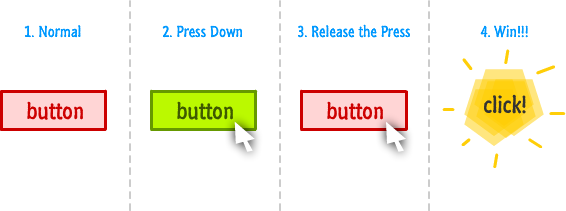

Nowoczesne Aplikacje Internetowe
DOM
Tadeusz Makuch
tadeusz.makuch@gft.com
Andrzej Matłosz
andrzej.matlosz@gmail.com
Materiały: https://github.com/tmakuch/UAM
Document Object Model
Strukturę DOM uzyskujemy poprzez wykorzystanie HTML
Nagłówek
Paragraf zawierający normalny, pogrubiony i przekrzywiony tekst.
Paragraf z linkiem do obrazku
Nagłówek
Paragraf zawierający normalny,
pogrubiony i przekrzywiony tekst.
Paragraf z
linkiem do obrazku
HTML - Dawno dawno temu
<table>
<th>
<td>
Tytuł
</td>
</th>
<tr>...</tr>
</table>
HTML - Niedawno
<div class="article">
<h1>
Tytuł
</h1>
<div class="content">...</div>
</div>
HTML - Dzisiaj
<article>
<header>
Tytuł
</header>
<section>...</section>
</article>
DOM rozróżnia dwie składowe: Element i Node
Element
element.children
element.firstElementChild
element.lastElementChild
element.nextElementSibling
element.parentElement
element.previousElementSibling
Node
node.childNodes
node.firstChild
node.lastChild
node.nextSibling
node.parentNode
node.previousSibling
Dostawanie się do elementów
document.firstChild.firstChild.nextElementSibling.lastChild
element.getElementById(); //znajdź element o danym ID
element.getElementsByTagName() // znajdź elementy o danym tagu
element.getElementsByClassName() // znajdź elementy o danej klasie CSS
element.querySelector();
element.querySelectorAll();
element.querySelector('header .subtitle');
Manipulowanie strukturą
var text = document.createElement('p');
text.textContent = 'JS is awsome'; //content (only text) of the element
test.innerHTML = 'Some html';
document.body.appendChild(text);
Pozostałe elementy
document.createElement(tagName)
parentNode.appendChild(node)
parentNode.insertBefore(newNode, beforeNode)
parentNode.removeChild(node)
parentNode.replaceChild(newNode, oldNode)
node.cloneNode(deep)
Klasy CSS
...
pEl.className // 'strong inactive'
pEl.classList // ['strong', 'inactive']
pEl.classList.contains('strong');
pEl.classList.add('extra-strong');
pEl.classList.remove('strong');
Zdarzenia

buttonEl.onclick = function () { alert('Klikło mnie!'); };
buttonEl.addEventListener('click', function () {
alert('Klikło mnie!');
});
Nie należy używać onclick, addEventListener jest bardziej uniwersalnym rozwiązaniem.
function klikloHandler() {
alert('Klikło mnie!');
buttonEl.removeEventListener('click', klikloHandler);
}
buttonEl.addEventListener('click', klikloHandler);
buttonEl.addEventListener('click', function() {
alert('Never gonna let you down!');
});
Fazy zdarzeń

Kontrolowanie przechodzenia przez fazy
el.addEventListener('click', callback, useCapture)
el.addEventListener('click', function (event) {
event.stopPropagation(); // nie będzie bąbelkował
});
el.addEventListener('click', function (event) {
event.preventDefault(); // nie wykona domyślnej akcji
});
Delegacja obsługi zdarzeń
var listEl = document.querySelector('#list');
listEl.addEventListener('click', function (event) {
if (event.target.tagName === 'LI') {
alert('list element clicked');
}
});
Materiały
https://developer.mozilla.org/en-US/docs/Web/Guide/HTML/Introduction
https://developer.mozilla.org/en-US/docs/Web/API/Element
https://developer.mozilla.org/en-US/docs/Web/API/Node
http://www.smashingmagazine.com/2013/11/12/an-introduction-to-dom-events